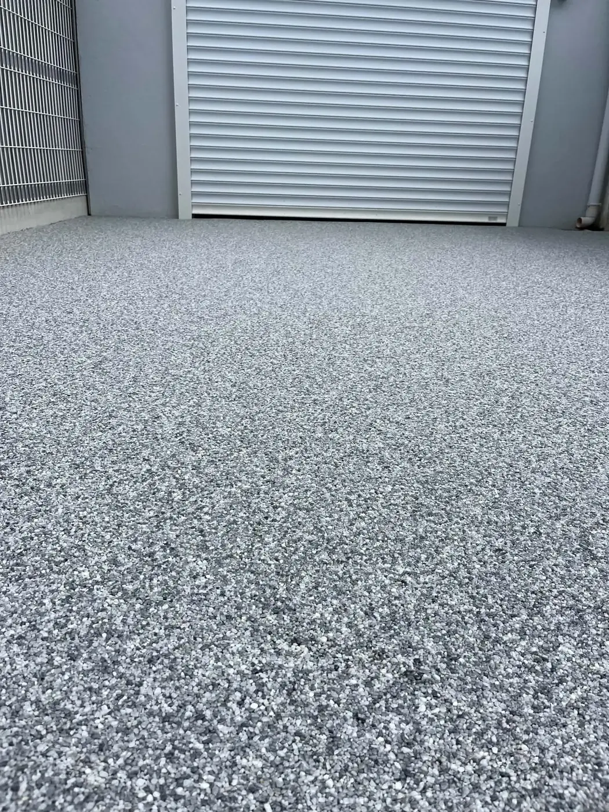
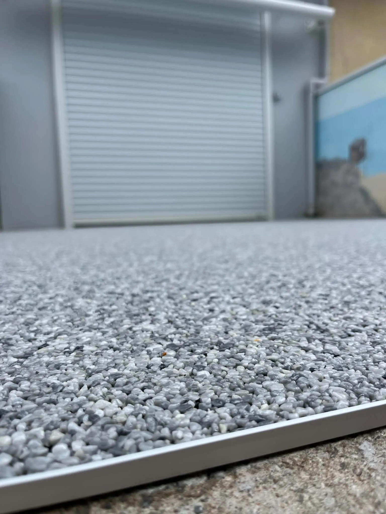
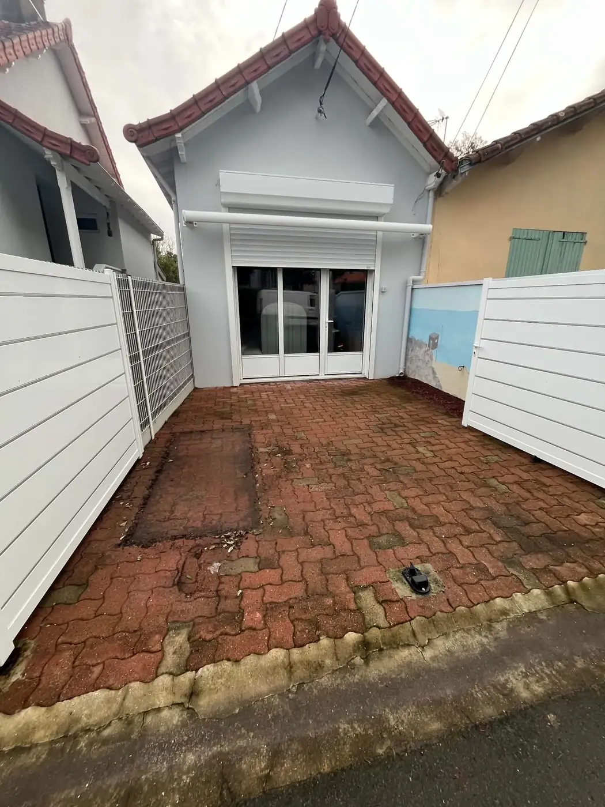
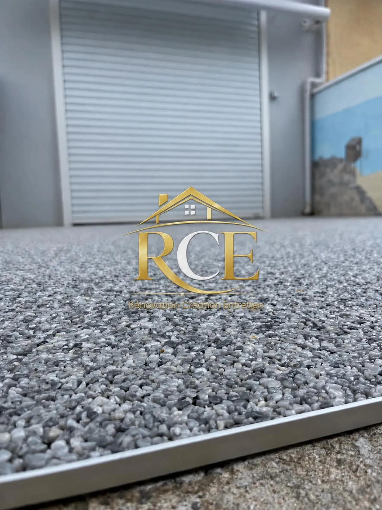

Accueil › Allée en moquette de pierre
Nos prestations
Allée et entrée de garage en moquette de pierre
Une entrée nette et élégante dès le portail. La moquette de pierre transforme une allée fatiguée en un sol propre, drainant et sans mauvaises herbes.

Les avantages pour une allée ou une entrée
-
Fini les gravillons
Les granulats sont liés par la résine : rien ne s’éparpille dans la pelouse ni dans la maison.
-
Pas de flaques
Le revêtement drainant laisse passer l’eau de pluie : l’entrée reste praticable par tous les temps.
-
Une belle première impression
Coloris et bordures assortis à la façade : l’entrée met la maison en valeur dès l’arrivée.
Allée piétonne ou passage de voitures ?
Une allée de jardin et une entrée de garage ne supportent pas les mêmes charges. Pour un passage de véhicules, le support et l’épaisseur du revêtement sont adaptés : c’est vérifié lors de la visite.
Le plus souvent, la moquette de pierre se pose sur une dalle béton existante. Sur du gravier ou de la terre, une dalle doit d’abord être réalisée : nous vous le précisons dès le devis.

Comment se déroule le chantier
-
01
Visite et devis
Contrôle du support et de l’usage (piéton ou véhicules), choix du coloris.
-
02
Préparation
Nettoyage, réparation des fissures et primaire d’accrochage.
-
03
Pose
Mélange des granulats et de la résine, étalé puis lissé à la taloche.
-
04
Séchage
Le délai avant de marcher dessus, puis avant d’y rouler, dépend de la météo : nous vous l’indiquons précisément le jour de la pose.
Allée réalisée à Vertou

Avant AprèsVertou
Une entrée de garage entièrement rénovée
L’ancien revêtement a laissé place à une moquette de pierre gris moucheté, posée jusqu’au seuil du garage. Le résultat : une entrée propre et uniforme, sans joints ni gravillons. Faites glisser le curseur pour voir l’avant.

Questions fréquentes sur les allées
Peut-on rouler en voiture sur la moquette de pierre ?
Oui, sur un support béton adapté et avec une épaisseur prévue pour le passage de véhicules. C’est vérifié lors de la visite.
Faut-il casser l’ancienne allée ?
Non, si la dalle béton est saine : elle est simplement préparée avant la pose.
Les mauvaises herbes peuvent-elles repousser ?
Le revêtement est continu, sans joints : les mauvaises herbes n’ont pas d’espace pour s’installer.
Envie de refaire votre allée ? Parlons-en.
Visite et devis gratuits. Nous étudions votre espace et vos envies afin de vous proposer une réalisation sur mesure.
Basés à La Planche, nous intervenons à Nantes et dans toute la Loire-Atlantique ainsi que dans le nord de la Vendée : Rezé, Vertou, Saint-Sébastien-sur-Loire, Bouguenais, Les Sorinières, Pont-Saint-Martin, Clisson, Pornic, Montaigu et leurs alentours.